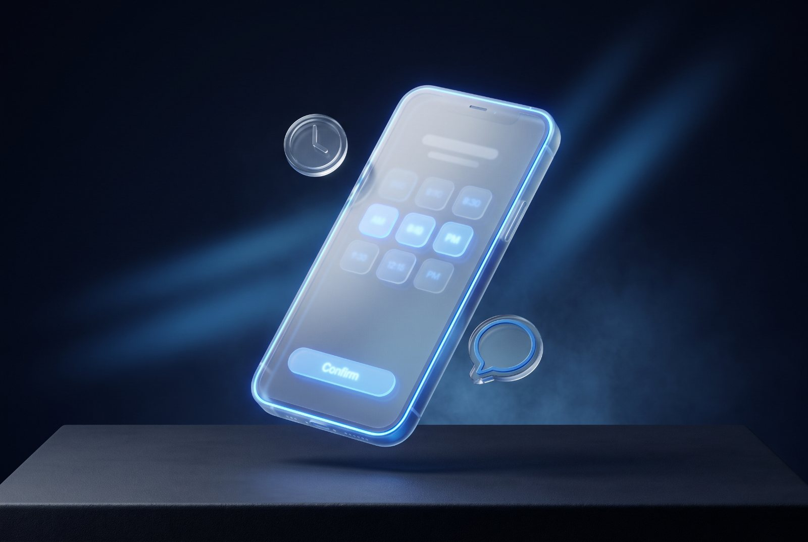
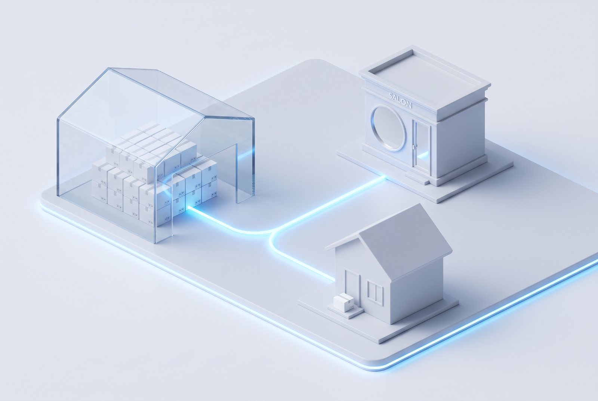
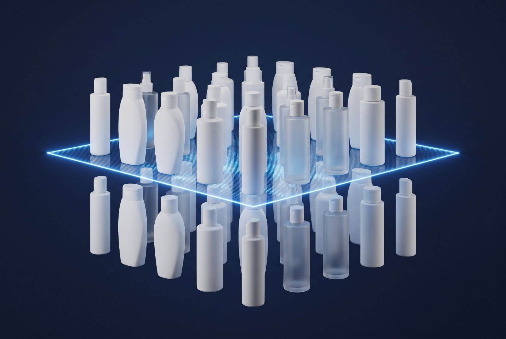
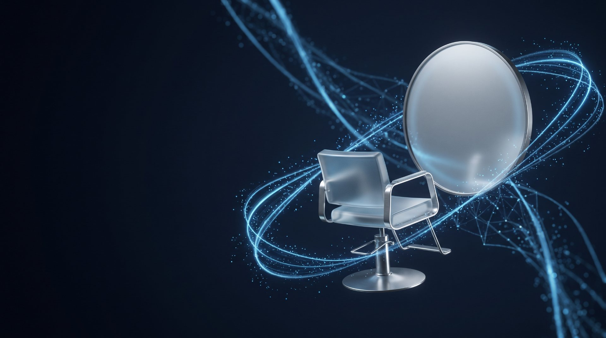

サロンの悩みを、
仕組みで
解決する。
在庫、予約、カルテ、シフト、給与、商品データ。現場で毎日起きる悩みを一つずつ仕組みに変えると、手が空き、数字が集まり、次の一手が早くなります。サロンを自分たちで運営しながらシステムをつくる会社が、サロンとディーラーの事業拡大の速度を上げます。
90サロン・6万人の会員が使う招待制クローズドEC
悩みを解決することが、
システムの務め。
予約が入り、来店し、施術して、会計し、商品を案内し、また来ていただく。この流れのどこかで、毎日手が止まっています。その一つひとつが売上と時間を静かに削っている。salon.town は、手が止まる場所を同じ顧客台帳の上で解決します。悩みが一つ減るたびに、店は次の店、次の商品、次のスタッフへ進めます。
Salon Town Booking
予約の二重管理、無断キャンセル、紙のカルテを一枚の台帳で解決
🎫招待制クローズドEC
「店販が続かない」を、招待した人だけが買えるECで解決
📦ディーラー連携 無在庫店販
在庫・梱包・発送の悩みをゼロに。在庫と出荷はディーラー
🏷B2B卸EC・商品マスタ統一
FAX発注とバラバラの商品データを、まとめ発注と統一マスタで解決
🎙AI受付
電話に出られない時間をなくす。話しても打っても24時間応答
🔒守りの設計
個人情報とカード情報の不安を、設計の段階で解決
👥シフト・給与
半日かかるシフト作成と歩合計算を、数秒と自動計算に
📈実績
累計会員6万人、最高月商7,000万円。現場で出た数字
その悩み、仕組みで解決できます。
サロンとディーラーから実際に聞いてきた悩みと、salon.town が用意している答えです。左が悩み、右が解決です。
サロン・美容師の悩み
- 店販の在庫と発注、廃棄が負担で続かない在庫と出荷はディーラー。サロンは案内するだけ →
- お客様が帰った後、他所や並行品で買われてしまう招待した会員だけが買えるEC。購入は担当者にひも付く →
- ホットペッパーと自社予約の二重管理。無断キャンセルで枠が空く実予約と確定シフトから空きを表示。前金と段階式キャンセル料 →
- カウンセリングと薬剤の記録が紙で、担当が変わると引き継げないiPadで記入・署名、薬剤は音声から下書き。すべて一枚のカルテに →
- 外国のお客様の予約、同意書、免税に手が回らない予約から同意書まで5言語。保存は日本語のまま →
- シフト作成に半日。歩合の計算ミスが怖い数秒で自動作成、公平性は点数で説明。歩合は自動計算し支払前に点検 →
- 施術中は電話に出られず、予約と問い合わせを取りこぼす話しても打っても24時間応答するAI受付 →
ディーラーの悩み
- 担当サロンの店販が伸びず、取引が広がらないサロンに「自分専用EC」を配れる。売上は担当サロン・担当者に残る →
- ECを始めたいが、倉庫も人も増やせないいつもの在庫からいつもの出荷。新しい投資は不要 →
- 独自の在庫システム（スマイルなど）があり、二重入力になる在庫・受注・出荷をつなぐ。当社エンジニアが接続 →
- メーカーごとに形式の違うCSVを、毎回手で直している列を合わせて取り込み、JAN重複は登録前に止める。メール転送で自動取り込み →
- EC用の商品画像がない。撮影の外注が高いスマホでJANを読んで撮るだけ。全画像が同じ形式に自動で整う →
- 電話とFAXの注文を受け直す手間。未集金の不安品番を貼り付けてまとめ発注。掛け払いは与信承認後に出荷 →
- AIをどう使えばよいか分からず、情報の扱いも不安記事と勉強会で「いまの常識」を届け、自社運用を支える →
悩みが一つ減ると、空いた時間と集まった数字が次の投資に回ります。だから、解決した悩みの数が、事業拡大の速度になります。
イメージではなく、実際の画面。
サロンで毎日使われている画面と、いま開発している画面をそのまま載せています。お客様が触る画面、スタッフの画面、オーナーの画面まで。

招待制ECお客様のアプリ

シフト・給与オーナーの管理画面

予約LINEから3ステップ

Salon Town Booking予約の悩みを、
一枚のカルテで解決する。
SEAM各店で毎日動いている仕組みを土台に、個人サロン・一人サロン向けに準備しています。予約が「取れる」だけでなく、来店前の希望、施術の記録、会計、次回の提案までが一本につながる。だから担当が変わっても、店が増えても、お客様との関係が途切れません。
- 確定シフトと実予約から空きを表示し、休みの日には予約が入らない。指名なしは自動で担当を割り当て
- カード事前決済と段階式キャンセル料。無断キャンセル歴のある方は前金必須。予約が確定しなかった場合は1時間以内なら全額を自動返金
- 来店前に強さ・部位・香り・アレルギーを選ぶだけで施術の設計図ができ、担当者の画面にアレルギーが最上段で届く
- iPadでカウンセリング・手書き署名、薬剤は音声から下書き（対応ブラウザ）。予約から同意書まで5言語、保存は日本語
- 一人サロンは「つかう機能をえらぶ」だけ。不要な画面は消え、必要になったら足す
「店販が続かない」を、
クローズドで解決する。
「クローズドだから売れない」を「クローズドだから売れる」に変えました。サロン専売品の多くは、メーカーが正規の対面販売を条件に卸しています。だから入口を店頭に置く。入会の9割が対面登録で、お客様は履歴から迷わず再注文し、担当者の提案がAIレコメンドで続きます。店販が続くと、来店と来店の間にも売上が立ち、次の店を出す資金と余裕が生まれます。
- 会員登録はサロンから500m以内、招待コードは発行から1分以内。不正登録と転売を防ぐ
- 施術履歴にもとづくAIレコメンドで、担当者の提案を継続的に届ける
- 入会の9割が店頭の対面登録。髪質診断・ランキング・記事まで一つのアプリに

Dealer partnership在庫はディーラー。
サロンは案内するだけ。
ECはディーラーを中抜きするものではありません。メーカー規約に沿った正規流通のまま、美容師一人ひとりが「自分専用EC」を持てる。ディーラーは、いつもの在庫からいつもの出荷で新しい売上の層を得て、担当サロンとの取引が深まります。2025年12月に発表し、2026年の本格展開に向けて連携を段階的に広げています。
正規流通
在庫・出荷
EC・会員管理
案内するだけ
自宅へ配送
- ディーラーは、いつもの在庫からいつもの出荷。新しい倉庫も人員も不要
- サロンは在庫を持たず、梱包も発送もしない。売上は担当者の評価に残る
- 売上は会員バーコードで担当サロン・担当者にひも付き、販売手数料として分配
つなぐ、撮る、使いこなす。
ディーラー様の三つを、まとめて支えます。
無在庫店販を始めるために、いまの仕組みを捨てる必要はありません。既存のシステムはつなぎ、商品画像は手元で撮り、AIは自社で使いこなせるように。当社のエンジニアが伴走します。
既存の在庫システムと、つなぎます
「スマイル」など、ディーラー独自の在庫システムをお使いの場合も連携できます。在庫・受注・出荷の情報を二重に入力せず、いまの業務の流れのまま無在庫店販を始められます。
基幹システム、会計、物流など、他のさまざまなシステムとの接続も当社エンジニアが対応します。まずはご相談ください。
連携を相談する →商品撮影アプリと、無料の商品登録
いま開発中の商品撮影アプリをお渡しします。スマホでJANを読んで撮るだけで、全商品の画像が同じ形式に自動で整い、低予算で始められます。
撮った画像はそのまま商品マスタに入ります。新商品が出たときの取り込みは、すべて無料です。
商品マスタ統一を見る →ディーラー様向けの、AIサポート
変化の速いAIの「いまの常識」を、記事と勉強会でお届けします。外部任せにせず、ディーラー様が自社でAIを運用できるようにすることで、情報の扱いなどのリスクを避けられます。
受注、問い合わせ、資料づくりが少しずつ自動化され、現場の困りごとをひとつずつシステムで解決していけます。
AI受付を見る →
B2B & PIMFAXの発注と、
バラバラの商品データを解決する。
美容ディーラー向けのプロ専用会員制EC「Salon Town Pro」と、商品マスタ統一システム。契約ブランドは契約先のサロンにだけ表示され、平日10時までの注文は当日出荷の目安を発注前に示します。商品データは23列の統一形に揃い、メールにCSVを転送するだけで自動で取り込まれます。発注と商品データの手間が消えると、営業担当は提案に時間を使え、取引先を増やせます。
- 品番・JAN・商品名を貼り付けるかCSVを上げるだけで、定番のまとめ発注が数十秒で完了。数量段階値引きは単価に自動反映
- 掛け払いは担当者の与信承認後に出荷。1サロン複数アカウントで、閲覧担当には価格を見せない設定も
- JAN重複は2系統で検出。画像は1200四方のwebpに自動変換し、統一CSV／JSONで出力。1ディーラー1アカウントで完全に分離
電話に出られない時間を、
AIで解決する。
サロンの現場では、薬剤の記録を音声で入力し、来店前のご希望をお客様の言葉から施術の設計図に変えるところまで、AIを「使いやすい形」で置いています。ディーラー様には、変化の速いAIの「いまの常識」を記事と勉強会で届け、自社で運用できるようにします。人が出られない時間を仕組みが受け取ると、取りこぼしが売上に変わります。
- 会社の問い合わせ窓口として、いますぐ試せます
- 価格や時期など未確定の内容は答えず、担当からご連絡
- 会話の記録は折り返しと品質向上のためだけに使用
- サロン向けには、お電話をAIが受けて空きを見ながら予約まで伺う応対を準備中（5言語、オプション）。AIは予約を確定させず、復唱してお客様の「はい」をいただいてから台帳に入れ、取れなかった電話は伝言としてお預かり
個人情報の不安を、
設計の段階で解決する。
サロンの現場を知るエンジニアが、設計から実装、運用まで一貫して担当します。個人情報を扱う前提で、認証、テナント分離、通信と保存の暗号化まで最初から備えました。守りが固いほど、メーカーもディーラーも安心して乗れる。だから連携が広がります。
- お客様やスタッフが触る端末に管理者の権限は置かない。スタッフは暗証番号か社員証QRで入り、お客様モードでは管理画面を物理的に消す
- カード情報は決済事業者の画面にのみ入力。サーバーは番号を受け取らない
- 会員番号だけでは名簿を引けない（会員証QRと電話下4桁の両方が要る）。前金の金額はサーバーで再計算し、顧客情報は暗号化して保管
- TypeScript / React / Next.js / Node.js / PostgreSQL / Cloudflare / PWA / LINE API / Stripe / Square
シフトと給与の半日を、
数秒と自動計算に。
スタッフはスマホで希望を出して打刻。お店は自動作成から歩合・給与の計算まで、そのまま使えます。人数不足の日は赤で見え、公平性は点数で説明でき、歩合率の入力ミスは支払前に止まります。
シフト自動作成
希望と公平さを見て数秒でたたき台。人数不足の日は赤で表示し、公平性スコアで説明できる
希望提出と打刻
紙もLINEの聞き返しも不要。回転QRで出勤退勤、なりすましも防ぐ
歩合と給与の見える化
段階式歩合を自動計算し、支払前に数式を点検。本人も今月の見込みが見える。給与CSV出力
悩みを解決した先に、数字が出ています。
業態の違う現場で、悩みが解決されています。
SEAM
「店販が続かない」「予約と会計が別々」という悩みを、対面で渡すメンバーズカードから入会する招待制ECと、予約・前金・カウンセリング・カルテ・iPadレジを同じ基盤に置くことで解決。髪質診断、ランキング、記事まで一つのアプリに入り、全国7店舗で毎日動いています。
株式会社菊池
電話とFAXの発注、掛け払いの管理、バラバラの商品データという悩みに対して、プロの発注フローをそのまま再現し、表形式のまとめ発注で現場の手間を減らしました。商品マスタの統一もここから始まっています。

悩みを一つ解決するたび、
事業は速くなる。
私たちは、サロンを自分たちで運営しながらシステムをつくっています。だから、どこで現場の手が止まるかを肌感覚で知っています。悩みや問題を解決することがシステムの務めです。解決するたびに時間が空き、数字が集まり、次の店、次の商品、次の取引先へ進む速度が上がる。最先端の技術を、派手さではなく「毎日ちゃんと使われて売上につながる形」に。すべてのサロンとディーラーへ。
小さく始めて、現場で育てる。
いきなり大きく作らず、動くものを早く共有し、確かめながら広げます。
ヒアリング
業務の流れと困りごとを現場目線で整理
設計・見積り
必要な機能と範囲、費用と期間を提案
開発
動くものを早めに共有し、確認しながら作る
導入・研修
移行とスタッフ研修まで現場に乗せる
運用・改善
稼働後も伴走し、数字を見て磨く
よくあるご質問
既存の予約システムやホットペッパーと併用できますか
併用を前提にしています。予約通知メールの取り込み、サロンボードへの書き込みと同期の監視を持っています。乗り換えを迫ることはありません。
ディーラーとして参加する場合、何を用意すればよいですか
新しい倉庫も人員も不要です。対象サロンと取扱商品を決め、出荷指示の受け取り方を決めたら、いつもの出荷をしていただくだけです。まず担当サロン1店から試せます。
「スマイル」など独自の在庫システムを使っています。連携できますか
できます。在庫・受注・出荷の情報を二重入力せずに済むよう、いまお使いのシステムに合わせて当社エンジニアが接続します。基幹システムや会計、物流など他のシステムも同様です。接続方法はシステムごとに異なるため、まず現状の構成をお聞かせください。
メーカーの流通規約に反しませんか
正規流通の枠組みの中で運用します。在庫と出荷はディーラー、購入できるのはサロンが対面で招待した会員だけです。会員登録はサロンから500m以内・招待コード発行から1分以内に限定し、誰にどこで売られたかが担当者単位で残ります。
Salon Town Bookingはいつから使えますか
SEAM各店で稼働中の仕組みを土台に、個人サロン・一人サロン向けに準備しています。提供時期と価格は決まり次第ご案内します。フォームから「提供開始の案内」をご希望ください。
個人情報やカード情報はどう扱われますか
カード情報は決済事業者の画面にのみ入力され、当社やサロンのサーバーは番号を受け取りません。お客様が触る端末に管理者の権限は置かず、会員番号だけでは名簿を引けない設計です。顧客情報は暗号化して保管します。
相談は有料ですか
無料です。つくりたいシステムが固まっていなくても、現場の困りごとから一緒に整理します。
株式会社サロンタウン
美容関連サイトとシェアサロンを運営しながら、サロンのためのシステムを開発しています。
- 会社名
- 株式会社サロンタウン（SALON TOWN Inc.）
- 代表者
- 代表取締役 田中 健誠
- 所在地
- 北海道札幌市中央区南2条西2丁目8-1 NC北専ブロックビル3階
- 設立
- 2019年2月
- 事業内容
- サロン向けシステム開発（招待制クローズドEC、B2B卸EC、予約システム、POS・顧客・在庫）、美容関連サイトの運営、シェアサロンの運営
- お問い合わせ
- AI受付（音声・文字、24時間） ／ フォーム。担当からご連絡します